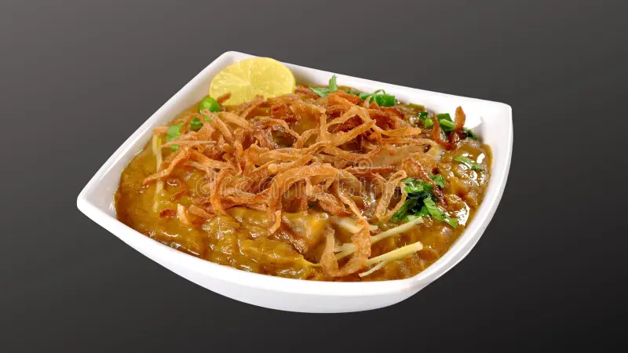

Haleem
Description
Haleem is a slow-cooked, savory dish popular in South Asia and the
Middle East, especially during Ramadan. It’s made with a blend of
wheat, lentils, and meat (usually mutton or chicken), cooked
together for hours until it becomes a thick, rich paste. Spiced
generously with garam masala, ginger, garlic, and fried onions,
haleem is garnished with lemon juice, fresh coriander, green
chilies, and fried onions. Its creamy texture and deep flavor
make it a hearty and filling meal.
Ingredients
- Wheat (broken or cracked)
- Lentils (chana dal, masoor dal, moong dal)
- Meat (mutton or chicken)
- Onions
- Ginger-garlic paste
- Green chilies
- Yogurt
- Garam masala
- Turmeric powder
- Red chili powder
- Cooking oil or ghee
- Fresh coriander leaves
- Lemon wedges
- Fried onions (for garnish)
- Soak wheat and lentils separately for a few hours.
- Cook the meat with onions, ginger-garlic paste, yogurt, and spices until tender.
- Boil the soaked wheat and lentils until soft.
- Shred the cooked meat and mix it with the wheat-lentil mixture.
- Blend or mash the mixture to get a smooth, thick consistency.
- Simmer on low heat, stirring continuously to avoid sticking.
- Garnish with fried onions, coriander leaves, green chilies, and lemon wedges before serving.
Home